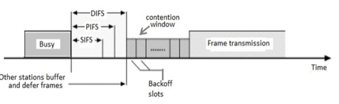
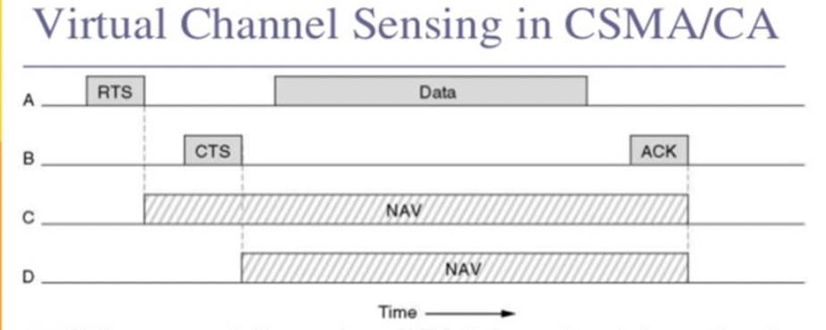
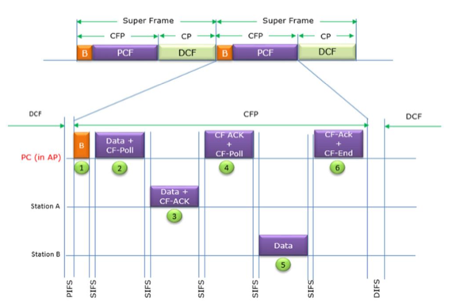
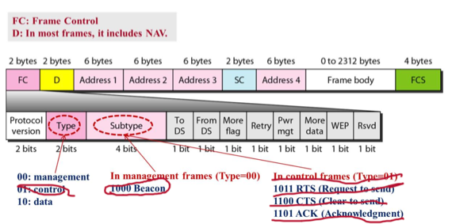
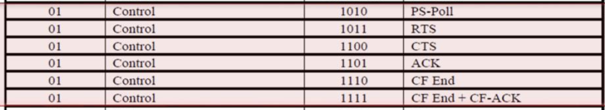
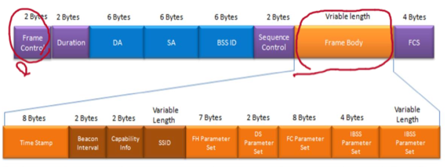
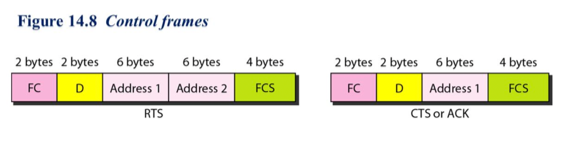

충남대학교 컴퓨터공학과 김상하 교수님의 "데이터 통신" 강의를 필기한 내용입니다.
다소 잘못된 내용과 구어적 표현 이 포함되어 있을 수 있습니다.
Wifi - IEEE 802.11
Architecture - BSS, ESS
- BSS : station들이 서로에게 프레임을 보낼 수 있을 만큼 가까이 붙어있는 환경을 말함
- 하나의 공유기를 공유하는 환경이라던가, 공유기 없이도 그냥 무선으로 프레임을 주고받을 수 있을 정도로 가까이 있는 환경
- 공유기같은걸 AP라고 생각하면 된다 - station과 무선으로 통신해 인터넷이랑 연결해주는 장치
- ESS : 반면에 얘는 station들이 멀리 떨어져 있어서 station - AP - 유선망 - AP - station 이렇게 연결되는 경우를 말한다
MAC Sublayer - PCF, DCF
- 앞에서 배운 대로 station과 AP모두 프레임 큐가 있어서 이것으로 프레임을 보낸다
- 다만 충돌이 일어나지 않아야 하므로 누군가가 프레임을 보낼때는 다른 모두는 프레임을 보내지 말아야 하며 이것을 CSMA / CA나 polling등으로 제어하게 된다
- PCF(Point Coordination Function) : 하나의 중앙장치를 기준으로 무선통신을 하는 것
- AP가 이 중앙장치의 역할을 함
- 중앙장치가 존재하기 때문에 Poilling방식을 사용할 수 있고 따라서 contention-free 즉, 충돌이 없다
- DCF(Distributed Coordinated Function) : 중앙장치 없이 무선통신하는 것
- 중앙장치가 없기 때문에 CSMA / CA의 방식으로 통신을 하며 즉, contention하다 - 충돌이 가능하다
- AP가 존재하는 BSS통신에서는 PCF를 사용할 수 있기 때문에 PCF와 DCF를 모두 사용한다. 다만 우선순위는 당연히 PCF가 DCF보다 높다
- 반면에 AP가 존재하지 않는 BSS통신에서는 PCF를 사용할 수 없기 때문에 DCF만 사용할 수 있다
- 따라서 상황에 따라서 DCF와 PCF를 골라서 사용하기 때문에 MAC layer에는 이 둘을 지원하는 부분이 모두 존재함
IEEE 802.11에서의 CSMA/CA
IFS 종류

- SIFS : 뭔가를 수신하고 그에 대한 응답을 준비해서 보내고 상대방이 응답을 받을 때 까지의 최소의 시간 - 프레임을 받고 나서 ACK를 보내기까지 걸리는 시간이나 ACK를 받고 나서 다음 프레임을 보내기까지 걸리는 시간 등
- PIFS : AP가 기다리는 시간. AP는 다른 station보다는 우선권을 가지기 때문에 DIFS보다 더 짧은 시간인 PIFS만을 기다리고 데이터를 보내는 것이 가능하다
- DIFS : 다른 station이 기다리는 시간. Carrier sensing을 했을 때 그것이 ACK가 아닌 프레임이면 프레임의 전송이 끝나고 idle해지면 IFS를 기다려야 되는데 일반 station의 경우에는 AP보다 우선권이 없기 때문에 IFS중에 제일 긴 DIFS을 기다리고 룰렛을 돌리게 된다
- 즉, 경쟁을 하는 상황이라면 DIFS의 시간을 기다리는 거고 우선권이 있는 상황이라면 SIFS의 시간을 기다리며 AP의 경우에는 경쟁상황에서 우위에 있어야 하기 때문에 SIFS보다는 길지만 DIFS보다는 짧은 PIFS의 시간만을 기다리게 되는 것
Virtual Channel Sensing in CSMA / CA

- DCF에서의 CSMA / CA는 좀 다르다
- 먼저 Idle해지면 DIFS를 기다리고 RTS(Request To Send) 를 보낸다
- 얘는 아주 작은 프레임으로 사이즈가 작기 때문에 detection을 하기도, correction하기도 아주 쉬움
- 만약 송신하고자 하는 놈이 얘 혼자뿐이면 수신자가 SIFS를 가다리고 회선이 비어 송신해도 된다는 뜻의 CTS(Clear To Send) 를 보내게 된다
- 그럼 송신자가 CTS를 받고 SIFS를 기다린 후 패킷 전송을 시작한다.
- 중요한 점은 RTS나 CTS를 수신했을 때에도 SIFS만큼의 시간만 기다리고 데이터를 보내게 된다
- 왜냐면 RTS나 CTS를 정상적으로 수신했을 때에는 자기가 우선권을 획득했기 때문에 데이터의 충돌을 우려하지 않아도 돼 SIFS만큼의 시간만을 기다리고 송신하는 것
- 만약 송신하고자 하는 놈이 얘만이 아니면 어떻게 되냐 - RTS가 깨져서 수신자에게 수신되기 때문에 지금 송신하려는 애들이 더있구나라는걸 알게 된다.
- 따라서 수신자는 CTS를 보내지 않고 그럼 송신자 또한 지금 통신하면 안된다는 것을 깨닫고 Back-off를 실시한다
- Back-off과정에서 대기시간이 랜덤으로 정해지기 때문에 대기시간 이후 여러명의 송신자가 RTS를 동시에 보내는 일이 없어진다
- RTS를 먼저 보내는 것은 만약 큰 데이터를 보냈다가 충돌이 나면 그것을 다시 보내거나 복구하는 데에 자원이 많이 필요하기 때문에 아주 작은 데이터를 먼저 보내서 충돌이 나는지 안나는지를 먼저 검사하는 것
- 먼저 Idle해지면 DIFS를 기다리고 RTS(Request To Send) 를 보낸다
- 그리고 기존의 CSMA / CA와 다른 점은 **Network Allocation Vector(NAV)**라는 것이 존재한다는 것이다 - 얘는RTS와 CTS의 헤더에 들어가 있는 필드인데 내가 데이터를 보내는데 ~만큼의 시간이 걸릴 거 같은데 이 시간동안만큼은 좀 양보해 달라 라는 의미이다
- 이 NAV가 존재함으로써 RTS나 CTS를 수신한 다른 station들은 이제 그 시간만큼은 쟤한테 양보해 sensing조차 하지 않고 그냥 잠수하게 된다
- 불필요한 sensing을 하지 않아도 되기 때문에 더 효율적이라는 장점이 있음
- 저 위의 그림에서는 D station은 A가 송신한 내용은 듣지 못하지만 B가 송신한 내용은 들을 수 있는 위치에 있는 station이어서 저렇게 CTS수신 이후 NAV만큼 기다리는 예시랜다
IEEE802.11에서의 PCF, DCF통신
- CFP - Contention Free Period : 중앙 AP를 이용해 통신하여 충돌이 일어나지 않는 기간(PCF)
- CP - Contention Period : 중앙 AP을 이용하지 않고 통신해 충돌이 일어날 수 있는 기간(DCF)
- 와이파이에서는 이런 AP를 통한 통신과 통하지 않는 통신을 모두 지원한다
- 어떻게 지원하냐면 일단

- AP에서 PIFS를 기다린 후에 Beacon(Management Frame) 이라는 애를 먼저 보낸다 - PIFS가 DIFS보다 짧기 때문에 AP가 우선권을 갖고 Beacon을 보낼 수 있다
- 이 Beacon 패킷에는 PCF로 통신할 시간과 DCF로 통신할 시간, 그리고 다음 Beacon을 보낼 시간(이 과정을 반복할 시간 간격 - Repetition Interval)이 들어있다
- 예를 들면 지금부터 10분동안은 PCF로 통신하고 그 이후 10분동안은 DCF로 통신하자 + 총 20분 뒤에 다시 Beacon을 보낼 것 이다 라고 Beacon 패킷에 명시되어 있는 셈이다
- 이렇게 AP가 통신 시간을 미리 통보하는것이 결국에는 Virtual Carrier Sensing을 지원하는셈인것 - PCF로 통신하는 동안에는 station들은 Carrier Sensing을 하지 않아도 되므로 - 즉, 위에서 배운 NAV를 설정함으로써 PCF로 통신할 시간을 명시하는 것 이다
- 만약 AP에 있는 송신할 내용이 담긴 큐가 거의 다 차서 송신할게 많은 경우에는 PCF시간을 길게 잡고 DCF시간을 짧게 잡거나 없애는 식으로 유동적으로 변경한다
- 그래서 PCF시간 동안에는 AP를 중심으로 Polling방식의 통신이 이루어진다
- 위에 예시 보면 먼저 A에게 Data를 보내고 너도 보낼 데이터가 있냐는 뜻의 Poll을 보내게 된다
- 그러면 A에서는 잘 받았다는 ACK와 함께 자신도 보낼 데이터를 보낸 뒤
- AP서는 잘 받았다는 ACK를 A한테 송신하고 B에게 보낼 데이터가 있냐고 Poll을 보내면
- B도 보낼 데이터가 있어 AP한테 Data를 보내고
- AP에서는 잘 받았다는 ACK와 함께 이제 PCF를 종료하고 DCF로 넘어가도 된다는 뜻인 CF-End를 보내게 되는 것
- 보면 처음에 Beacon을 보내는 것은 AP한테 우선권이 있어야 하므로 PIFS만을 기다리고 보내게 되고
- PCF동안에는 충돌의 위험이 없으므로 SIFS만을 기다리고 패킷을 보내며
- PCF가 동료된 후에는 DCF로 통신하기 때문에 DIFS를 기다리는 것을 알 수 있다
- 그리고 Beacon 송신과 PCF통신의 경우 충돌의 위험이 없으므로 CFP가 되는 것 이고
- 그 이후의 DCF통신의 경우 퉁돌이 일어날 수 있으므로 CP가 되는 것 이다
- 그리고 CFP와 CP를 합친 이 반복되는 단위를 Super Frame이라고 한다
Frame Format - 프레임의 구조
- 얘는 일단 Frame의 구조를 일반화한 그림이다

- Type과 Subtype을 이용해서 그 뒷부분을 어떻게 해석해야되는지 명시한다
- Type 00 이면 Management type인데 이때 Subtype 1000이면 얘가 Beacon으로 기능한다는 것을 나타낸다

- Type 01이면 Control type인데
- Subtype 1011이면 RTS
- Subtype 1100이면 CTS
- Subtype 1101이면 ACK로 기능한다는 것을 나타내며
- 더 자세한 것은 위에 나와있다
- Type 10이면 Data type이고 그냥 얘가 Data 전송용 프레임이라는 것을 나타내는 것 - 얘도 Subtype에 뭔가를 넣어서 그냥 데이터인지, 데이터랑 ACK를 같이 보내는 것인지 등을 알려준다

- 얘는 Beacon Frame의 구조이다
- 보면 일단 저 Time Stamp에는 AP의 현재 시간을 알려준다 - 혹시나 Station들의 시간이 AP와 다르면 오작동하므로 현재시간을 다 일치시키는 것(동기화하는 것)
- 그리고 저기 Beacon Interval에 전체 시간(다음 Beacon을 보낼 시간 - Super Frame의 시간)을 명시하고
- Duration에 NAV시간을 명시함으로 이 시간까지는 PCF로 동작할꺼니 Carrier Sensing을 하지 말아라 라고 알려주는 것
- 보면 프레임의 일반화된 구조를 나타낸 그림에서는 Address1라고 돼있던 부분이 여기서는 DA가 되었고 Address2라고 돼있던 부분이 SA가 되는 등 차이가 난다 - Frame의 type에 따라 뒷부분이 다르게 해석된다는 것이 이것을 말하는 것

- 얘는 Control Frame의 구조인데 여기서 봐도 일반화된 구조랑은 차이가 나는 것을 알 수 있다